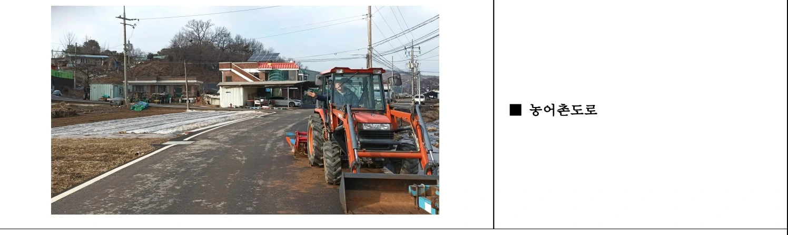

774. Hai cách lái xe nào là an toàn nhất trong tình huống sau?

- ①Nếu máy móc nông nghiệp đang không chạy, thì người lái xe không cần phải đặc biệt chú ý.
- ②Đường ở nông thôn và làng chài không quy định tốc độ giới hạn nên lái xe tăng tốc.
- ③Mặt đường có nhiều cát và bụi nên cần lái xe cẩn thận.
- ④Đảm bảo khoảng cách an toàn với máy móc nông nghiệp bằng cách tạm dừng hoặc giảm tốc độ trước khi tiến đến gần máy móc nông nghiệp.
- ⑤Tuyệt đối không nhấn còi làm ảnh hưởng đến người lái máy móc nông nghiệp.
Xem đáp án
Đáp án
③ Mặt đường có nhiều cát và bụi nên cần lái xe cẩn thận.
④ Đảm bảo khoảng cách an toàn với máy móc nông nghiệp bằng cách tạm dừng hoặc giảm tốc độ trước khi tiến đến gần máy móc nông nghiệp.
Căn cứ
Đường giao thông nông thôn cũng được coi là đường bộ theo Luật Giao thông đường bộ (Điều 2, Khoản 1, C) Luật Giao thông đường bộ. Kể cả khi không có biển hạn chế tốc độ, tốc độ tối đa trên đường thông thường là 60 km/h (Điều 19, Khoản 1, Mục 1, Mục B Quy tắc thi hành Luật Giao thông đường bộ).
Phần căn cứ là bản dịch máy để tham khảo.